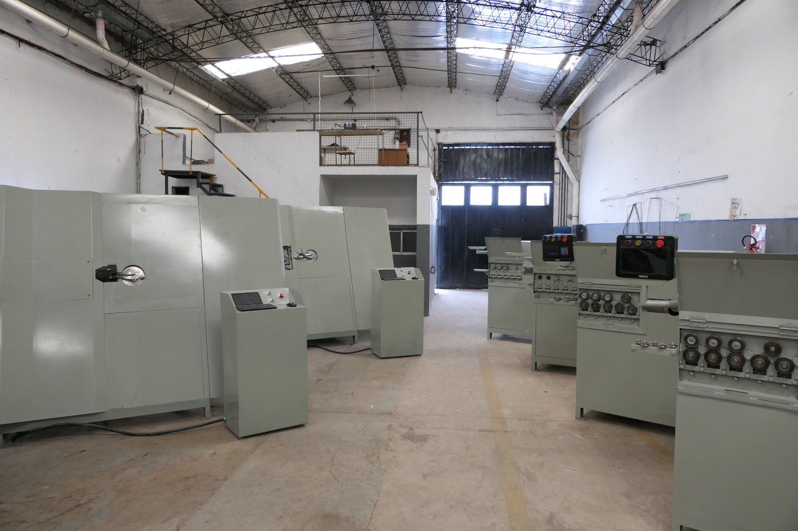
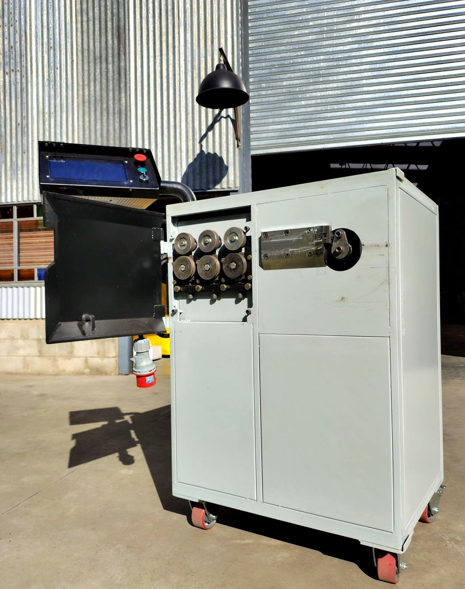
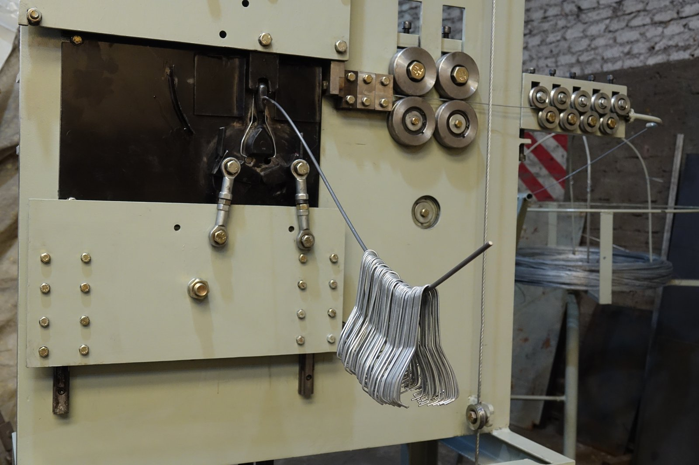
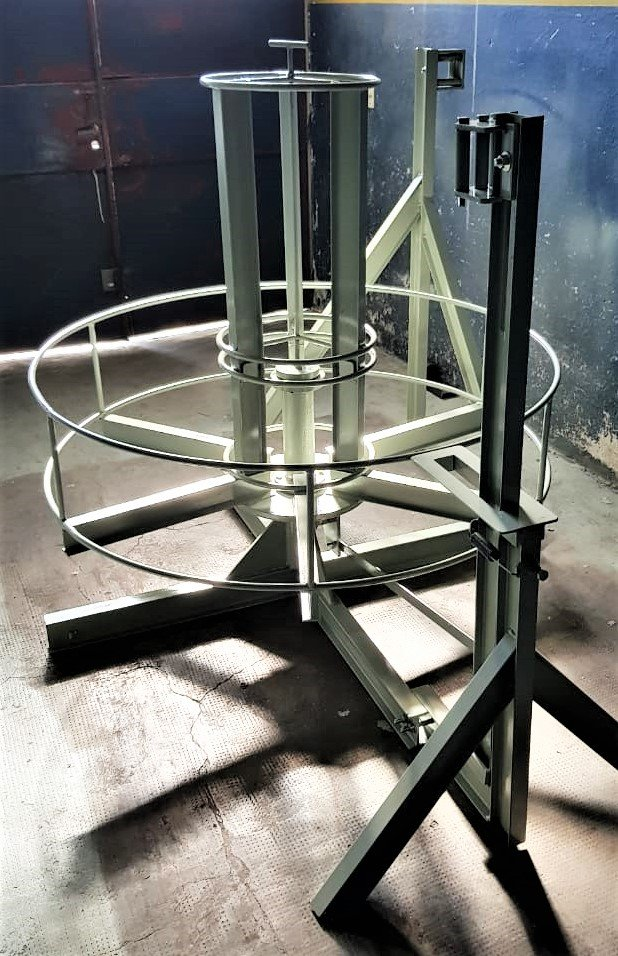
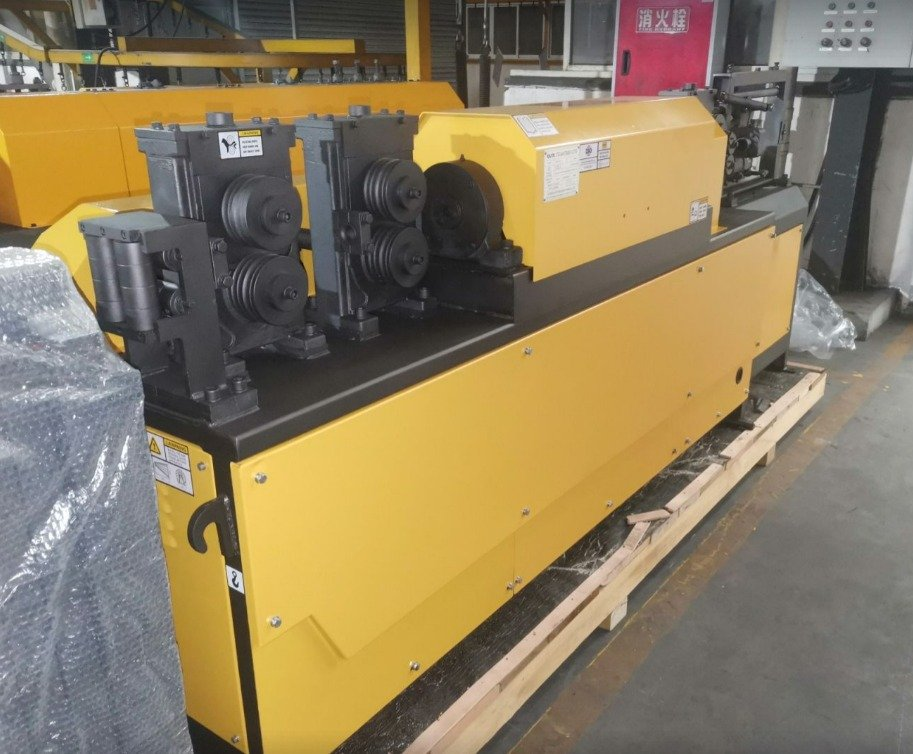

Fabricante argentino de máquinas industriales
Tu proyecto.
Nuestras soluciones.
Diseñamos y fabricamos máquinas enderezadoras, dobladoras y conformadoras de alambre y alambrón para bajar costos, subir productividad y ganar más ventas.

Fabricación propia · ArgentinaQuiénes somos
Una empresa argentina dedicada al diseño y la fabricación
Trabajamos día a día en la mejora continua de nuestros productos, innovando con las tecnologías actuales y dándoles la robustez necesaria para soportar las exigencias más altas de producción.
Conocer la empresaPor qué elegir PAMAGA
- Fabricación
- 100% argentina, diseño digital pieza por pieza
- Repuestos
- Garantizados a largo plazo, se replican del archivo original
- Soporte
- Post venta remoto o presencial
- Durabilidad
- Componentes de alta resistencia, bajo mantenimiento
Catálogo
Nuestros productos
Estribadoras automáticas, conformadoras, portarrollos y enderezadoras. Elegí el equipo según el diámetro de alambre y el volumen de producción que necesitás.

Estribadora Automática 4 a 8 mm
Alimentada con rollo. Endereza, dobla y corta en un solo ciclo, hasta 4 programas a la vez.
Ver ficha técnica →
Estribadora Portátil 4 a 8 mm
Versión liviana y transportable, pensada para trabajar directo en obra con barras de 12 m.
Ver ficha técnica →
Estribadora Bidireccional 6-12 mm Compacta
Mayor diámetro de trabajo en formato compacto, con doblado en ambos sentidos.
Ver ficha técnica →
Estribadora Bidireccional 6-12 mm Doble Hilo
La de mayor producción: hasta 2.852 estribos por hora trabajando en dos hilos.
Ver ficha técnica →
Conformadora 2D hasta 8 mm
Servomotores en doblado y tracción para piezas industriales de alta precisión.
Ver ficha técnica →
Conformadora Automática hasta 5 mm
Máquina a medida según la pieza del cliente, con matrices intercambiables.
Ver ficha técnica →
Portarrollos
Debanador para rollos de alambrón de hasta 3.500 kg.
Ver ficha técnica →
Enderezadora GUTE SGT6-16A
Enderezadora y cortadora hidráulica para varillas lisas y corrugadas de 4 a 16 mm.
Ver ficha técnica →Servicios
Te acompañamos en todo el proceso
Asesoramiento
El mejor asesoramiento durante todo el proceso de compra.
Puesta en marcha
Soporte técnico para instalar y arrancar el equipo en tu planta.
Capacitación
Formamos a tu personal para operar la máquina desde el primer día.
Post venta
Servicio técnico remoto o presencial una vez en producción.
Casos de éxito
Clientes que ya producen con PAMAGA
"Ya tenemos 8 máquinas funcionando, todas compradas a la misma empresa. Las máquinas andan 8 horas por día de lunes a sábado y no se rompen."Carlos — Fabricante de estribos, Córdoba
"Con lo que la máquina nos permite ahorrar se ha auto amortizado varias veces el valor que la pagamos inicialmente."Roberto — Constructora, Jujuy
"En una ocasión enviamos la máquina a fábrica para un service integral y volvió como nueva."Florencio — Premoldeados, Salta
¿Listo para producir más rápido?
Contanos qué necesitás fabricar, sin compromiso.